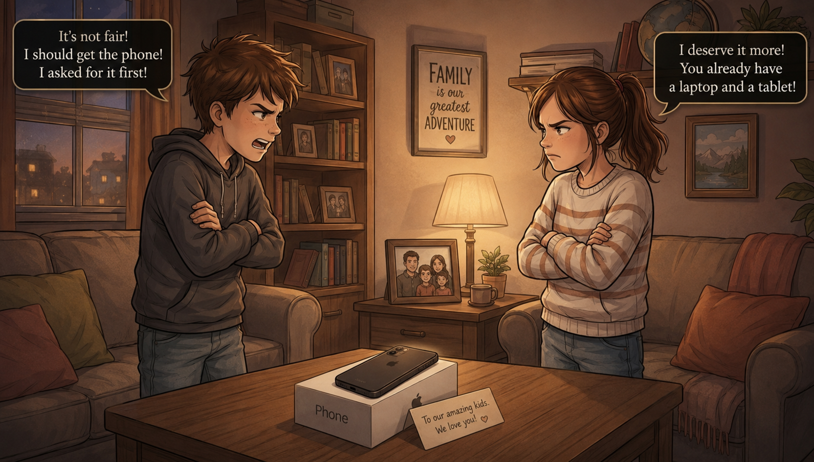

The First Distance
Conflict · Family · Misunderstanding
What was meant to be a simple gift quickly becomes the spark of conflict. A misunderstanding escalates into an argument, revealing the growing emotional distance between the siblings.
This moment defines the beginning of their separation—one driven not by hatred, but by silence and unmet expectations.